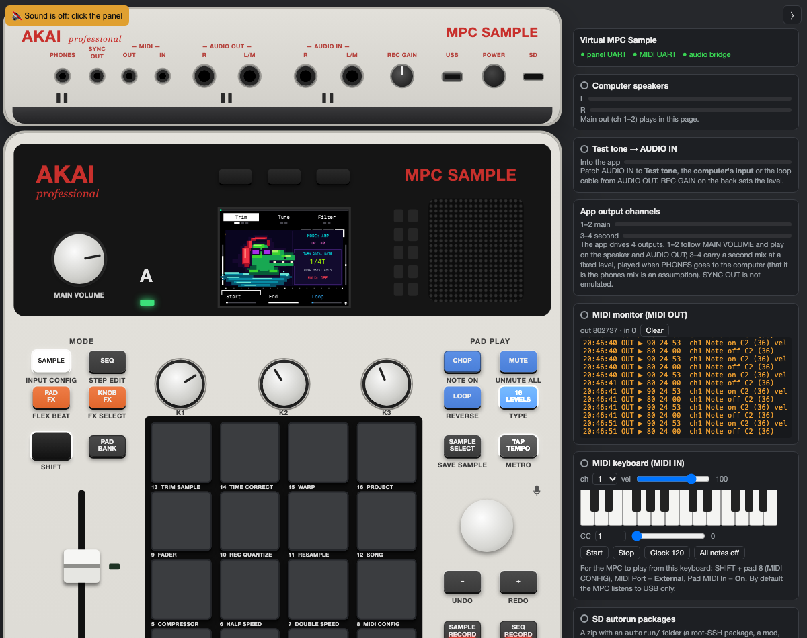
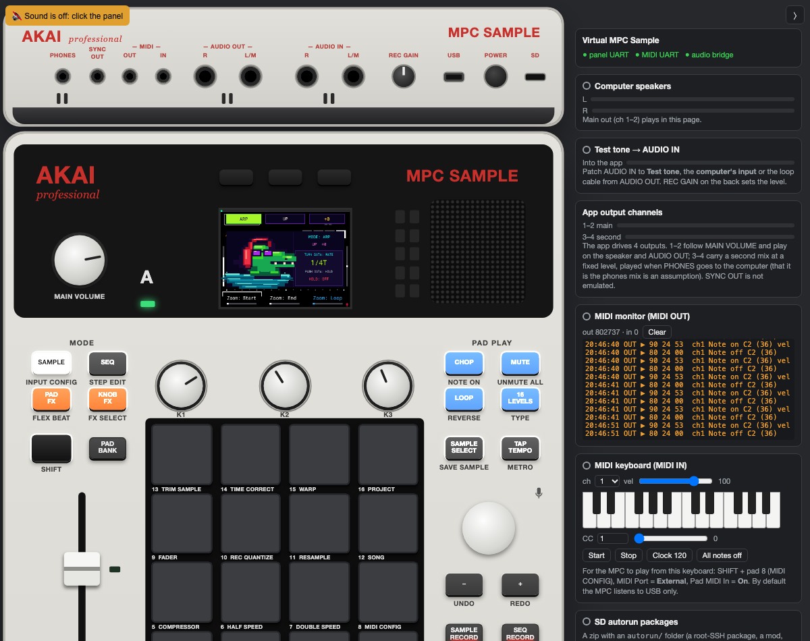
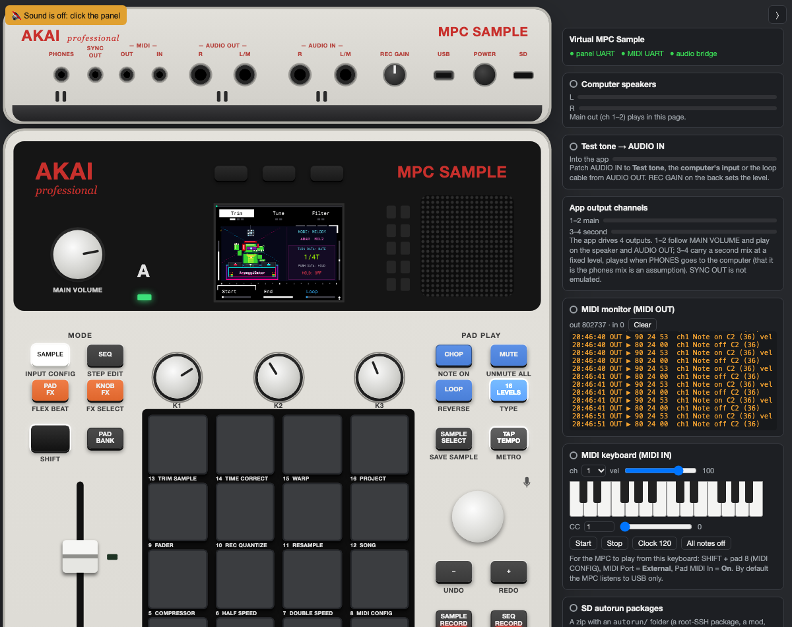
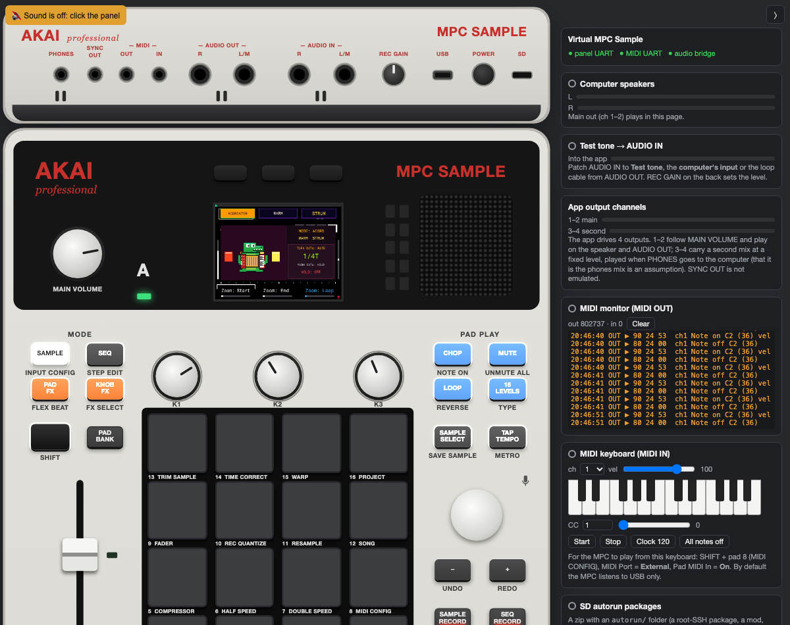
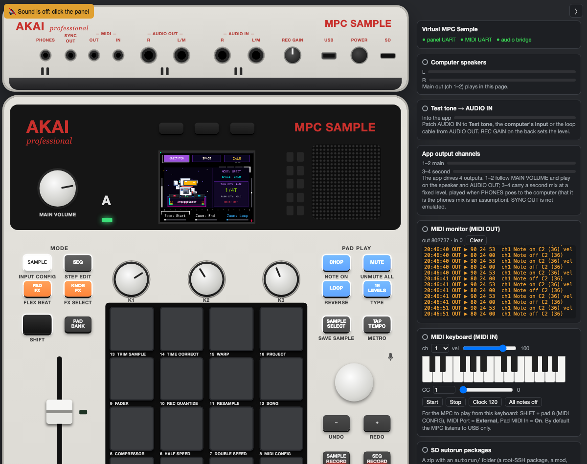

v0.0.7.1 UI bez zmian od v0.0.6.0 · build 34a9ec26…
Pełna wersja tekstowa: USERS-MANUAL-0.0.7.1.md. Poniżej skrót z screenami z czystej wersji 0.0.6.0 (interfejs bez zmian w 7.1; 7.1 to natywny silnik audio i fix pierwszego padu).
MPC Sample (firmware)
└── ekran SAMPLE
└── 16 LEVELS
└── [SHIFT trzymany LUB silnik włączony] → NAKŁADKA ArpeggiGator
├── lewo: animacja (inny aligator dla każdego trybu)
├── prawa góra: MODE + parametry + RATE + HOLD
└── dole: podpisy B1 / B2 / B3 (tylko pod SHIFT-em)
| Przycisk | Bez SHIFT | Z SHIFT |
|---|---|---|
| B1 / SCREEN 1 | — | Zmiana trybu: Off → ARP → MELODY → MUTATOR → ACORDATOR → ORBITATOR → Off |
| B2 / SCREEN 2 | — | Parametr 1 (zależy od trybu) |
| B3 / SCREEN 3 | — | Parametr 2 (zależy od trybu) |
| DATA | obrót = RATE, wciśnięcie = HOLD | brak działania |
| 16 LEVELS | wejście/wyjście widoku | nie wychodzi z widoku |
| PAD 1…16 | nuty do silnika | skrót firmware'u, nie nuta |
| STOP | podwójny w ≤650 ms = pełny reset | — |
| PLAY | mod tylko czyta transport firmware'u | — |
| Tryb | B2 | B3 |
|---|---|---|
| ARP | UP → DOWN → UP/DOWN → DOWN/UP → CONVERGE → DIVERGE → RANDOM → PLAYED | +0 → +1 → +2 → +3 oktawy |
| MELODY | 2BAR → 4BAR → 8BAR → 16BAR | MEL1 … MEL9 |
| MUTATOR | SUBTLE → WILD → CHAOS | FRZ OFF ⇄ FRZ ON |
| ACCORDATOR | WARM → SAD → SPACE → CINEMA | STRUM → PULSE → WAVE |
| ORBITATOR | AMBIENT → SPACE → DARK → RHYTHM | CALM → FLOW → WILD |








Ustaw MELODY + HOLD, sekwencja gra → wyjdź do zakładki Sample (muzyka nie staje) → klikaj pady, zmieniając jeden sampel dla całej sekwencji. Nowe nuty grają nowym samplem; już brzmiący głos nie jest przestrajany.
SHIFT + B3 przełącza FRZ ON/OFF. Zatrzymuje mutację bufora — kolejne pętle grają identycznie. Stan widoczny na podpisie B3 i w panelu moda.
Podwójny STOP w ciągu 650 ms = Off, czyszczenie silników, HOLD, aktywnego sampla i LED-ów.
Wersja 0.0.7.1 — jeden kod, dwa profile dostarczenia. Oba artefakty są pod tagiem v0.0.7.1.
| Artefakt | Przeznaczenie | SHA-256 |
|---|---|---|
arpeggigator-v0.0.7.1.zippobierz z release'u v0.0.7.1 |
Karta SD → fizyczna MPC Sample 1.3.0.12. Po rozpakowaniu skopiuj katalog autorun/ na kartę. |
66846aaaf73b06b218ebc63c9ecea8606e97c14e7f9aecd677bc1aea8f4678e9 |
arpeggigator-v0.0.7.1-lab.sopobierz z release'u v0.0.7.1 |
Emulator / QA-DEV: python3 lab.py preload …. To nie jest paczka na kartę SD. |
66e4c6cbd5125c15af83da06b29d7f6cc94e157f1cdfaa0fe847f13899ab6df8 |
Sidecar arpeggigator-v0.0.7.1.zip.sha256 jest w tym samym release. Przed włożeniem karty zweryfikuj paczkę:shasum -a 256 -c arpeggigator-v0.0.7.1.zip.sha256
Źródło: release v0.0.7.1. Opis UI i screeny z v0.0.6.0 (interfejs bez zmian). Screeny: DEV, build 34a9ec26…, 18.11.2026. Manual przygotowany przez Heńka.